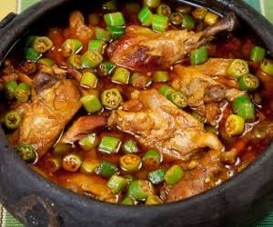
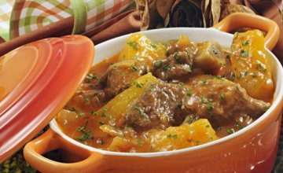
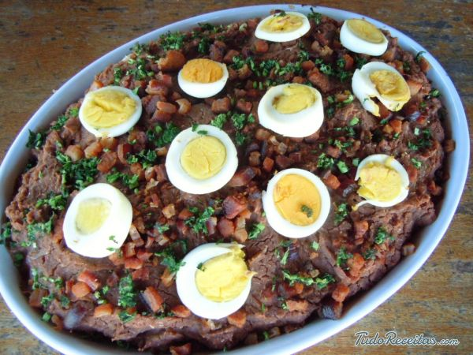
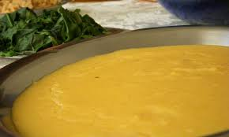
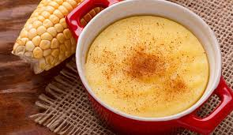
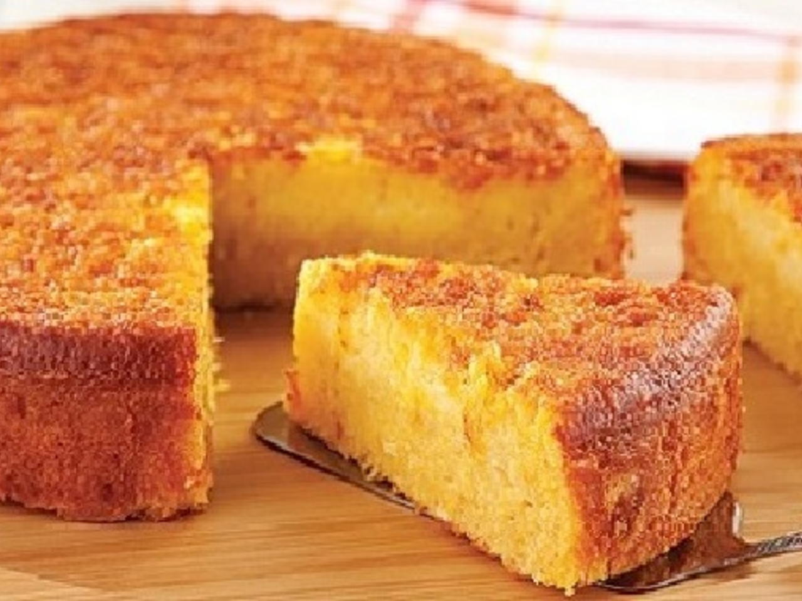

Delicias de Minas.
Que mineiro nunca viveu essa experiência gastronômica típica mineira, nem que seja em um dos muitos restaurantes típicos de comida mineira? São muitos os cereais, são muitas as formas de se fazer um angu com fubá de moinho d'água, de refogar verduras da horta ou dos quintais, como couve, almeirão, taioba, cansanção, ora-pro-nobis... O que dizer do quiabo, da abóbora-menina, da abobrinha? E o pastel de angu? E o galopé? E o chuchu com bacalhau? O torresmo crocante, a carne na lata de gordura, o pernil temperado, o leitão à pururuca, o feijão tropeiro, o franguinho caipira? Não há como não venerar essa raiz cabocla, caipira que temos nas Minas Gerais e que faz da nossa cozinha uma das mais saborosas do país, recebendo influências que vão dos indígenas aos africanos, passando, obviamente, pelos colonizadores europeus. Por isso, a chamada cozinha tradicional ou típica mineira foi forjada a partir dos séculos XVIII e X IX e em dois momentos distintos e complementares: o de escassez, no auge da mineração do ouro, e o de fartura, com a ruralização da economia regional.
Aprenda e faça receitas deliciosas da comida mineira.
Feijão TropeiroFrango com Quiabo

Vaca Atolada

Tutu a Mineira

Pão de Queijo

Torresmo

Angu

Mingau de Milho Verde

Bolo Cremoso de Fubá
